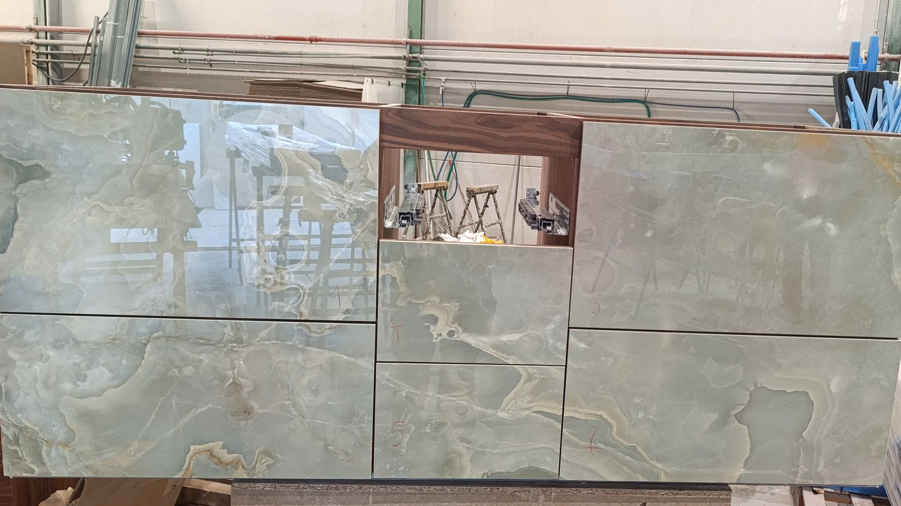

Камінні портали
Обрамлення топки, полиця, подіум і облицювання прилеглої стіни. Матеріал підбираємо під тип каміна — дров'яний і біокамін це різні вимоги.
Камінні портали, столи й консолі, стінові панелі, підіконня-лави, ресепшн-зони у квартирі. Те, що не входить у стандартні категорії, але тримає інтер'єр разом: один камінь, який повторюється в кількох місцях.

Що робимо
Найчастіше це роботи за кресленням дизайнера, де стандартного рішення просто немає
Обрамлення топки, полиця, подіум і облицювання прилеглої стіни. Матеріал підбираємо під тип каміна — дров'яний і біокамін це різні вимоги.
Обідні столи, журнальні, консолі в передпокій. Рахуємо підстілля під реальну вагу плити, а не навпаки.
Акцентна стіна за телевізором, у спальні чи в передпокої. Великий формат означає мінімум стиків — розкладку показуємо до замовлення.
Продовження підвіконня в лаву, сидіння в еркері, підіум під вазони. Товстий торець і підсилення під навантаження.
Ідея
Найсильніший прийом у камені — не дорогий матеріал, а повторення. Коли стільниця на кухні, підвіконня у вітальні й полиця каміна зроблені з однієї плити, квартира читається як єдине ціле. Коштує це менше, ніж здається: залишки великої плити йдуть у дрібні вироби замість того, щоб їхати у відходи.
Питання
Портал не контактує з вогнем безпосередньо — між ним і топкою є зазор і ізоляція. Але матеріал ми підбираємо під тип каміна: для дров'яного це граніт або керамограніт, акрил там не місце.
Буде важким, і це треба закласти в конструкцію. Ми рахуємо підстілля під реальну вагу плити або беремо тонший керамограніт — тоді стіл виглядає масивним, а важить удвічі менше.
Залежить від матеріалу. Акрил зростається безшовно на будь-яку площу. Керамограніт і кварц ідуть плитами, тому стики будуть — ми показуємо їхнє розташування на розкладці до замовлення.
Так, з онікса й тонкого мармуру. Плиту роблять просвічуваною і підсвічують ззаду — так роблять барні стійки та акцентні панелі. Це дорого і виглядає відповідно.
Це основна частина роботи. Приймаємо креслення в будь-якому вигляді, перевіряємо на технологічність і кажемо, що з намальованого в камені не вийде — до того, як щось різати.
Для бізнесу
Працюємо за вашими кресленнями: перевіряємо проєкт на технологічність, даємо технічні дані плит і зразки, узгоджуємо вузли до початку робіт.
Суміжні розділи
Дякуємо. Передзвонимо протягом години в робочий час.